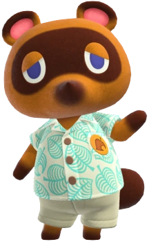

Share Your Horizons!
Animal Crossing — Your Horizons enables you to share your favourite aspects of the beloved Animal Crossing: New Horizons game. Share your experience, villagers, music with new and old friends.

Explore the Universe!
Explore the vastness of the Animal Crossing universe, full of items, decorations, villagers, soundtracks and so much more! Find out more about your favourite aspects of Animal Crossing!

Villagers
Fossils
Soundtracks
Bugs & Co